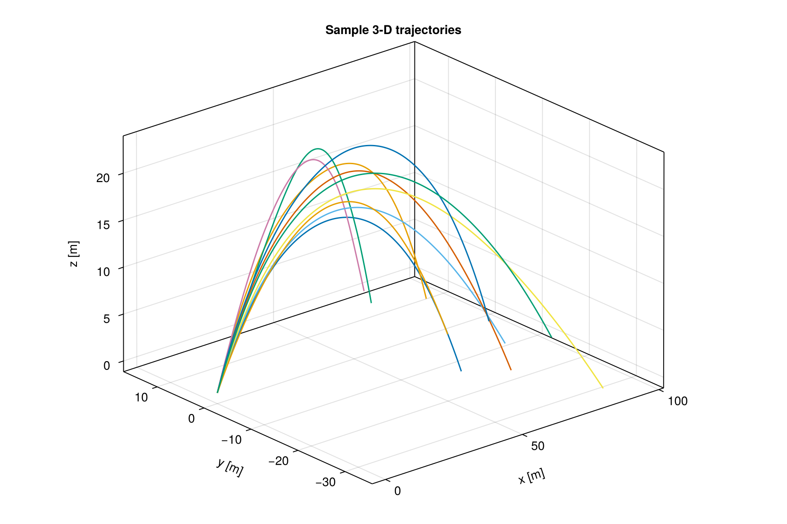
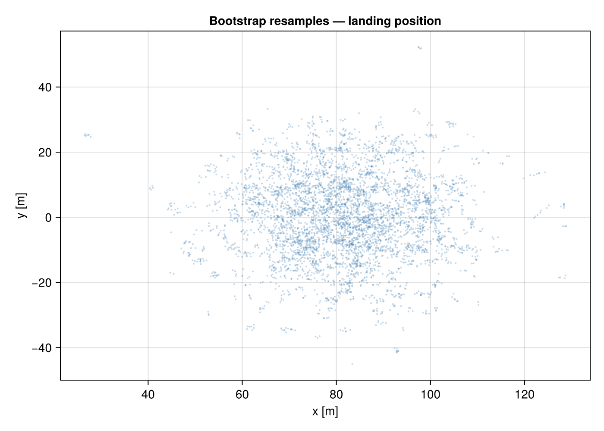
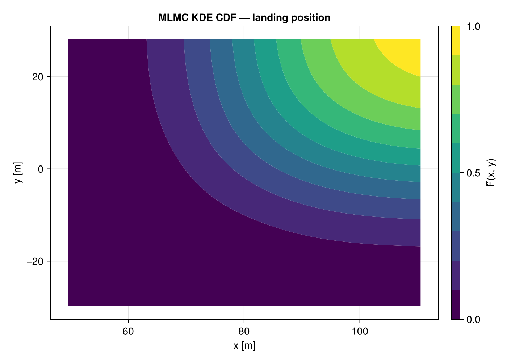
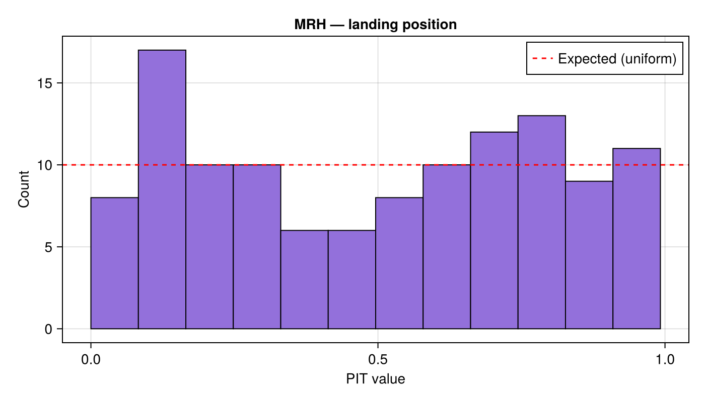
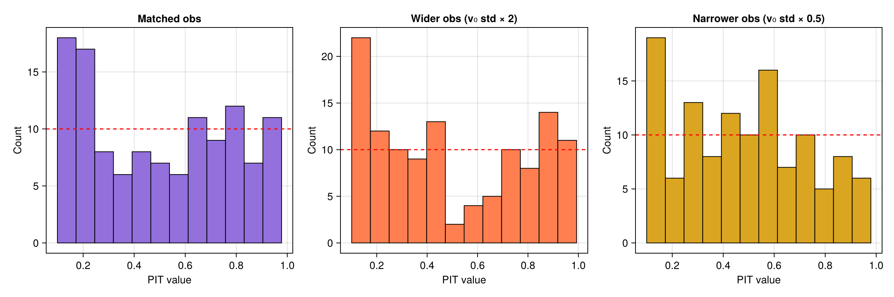

Projectile in Wind
This example demonstrates 3-D projectile motion under an uncertain wind field generated with GaussianRandomFields.jl. The Euler integration timestep determines the MLMC level, and the QoIs are the landing coordinates $(x_{\mathrm{land}},\, y_{\mathrm{land}})$.
Model
A projectile is launched from the origin with uncertain initial velocity $\mathbf{v}_0 = (v_{x0},\, v_{y0},\, v_{z0})$. During flight it experiences gravity and a random wind acceleration that varies with time. The wind components $w_x(t)$ and $w_y(t)$ are independent samples from a 1-D Gaussian random field with exponential covariance on the time axis.
The equations of motion are
\[\ddot{x} = w_x(t),\qquad \ddot{y} = w_y(t),\qquad \ddot{z} = -g.\]
The projectile lands when $z$ crosses zero from above.
Setup
using MultilevelMonteCarlo
using GaussianRandomFields
using CairoMakie
using Statistics
using Random
Random.seed!(123)
const g_acc = 9.81
const T_max = 6.0 # generous upper bound on flight time
# --- Wind field: 1-D GRF along the time axis ---
n_wind = 301
t_wind = range(0, T_max; length = n_wind)
cov_fn = CovarianceFunction(1, Exponential(1.5)) # length-scale 1.5 s
grf_wind = GaussianRandomField(cov_fn, Cholesky(), t_wind)
# Linear interpolation helper
function _wind_at(vals, t)
t <= t_wind[1] && return vals[1]
t >= t_wind[end] && return vals[end]
idx = searchsortedlast(t_wind, t)
idx = clamp(idx, 1, length(t_wind) - 1)
α = (t - t_wind[idx]) / (t_wind[idx+1] - t_wind[idx])
return (1 - α) * vals[idx] + α * vals[idx+1]
end
# Uncertain parameters: initial velocity + wind realisation
function draw_params()
vx0 = 20.0 + 1.0 * randn()
vy0 = 0.0 + 1.0 * randn()
vz0 = 20.0 + 1.0 * randn()
wx = 2.0 .* GaussianRandomFields.sample(grf_wind)
wy = 2.0 .* GaussianRandomFields.sample(grf_wind)
return (vx0, vy0, vz0, wx, wy)
endLevel functions
Each level uses a different Euler-integration timestep. Finer levels yield more accurate landing positions.
function make_level(dt)
function simulate(params)
vx0, vy0, vz0, wx, wy = params
x, y, z = 0.0, 0.0, 0.0
vx, vy, vz = vx0, vy0, vz0
t = 0.0
x_prev, y_prev, z_prev = x, y, z
while true
ax = _wind_at(wx, t)
ay = _wind_at(wy, t)
x_prev, y_prev, z_prev = x, y, z
vx += ax * dt; vy += ay * dt; vz -= g_acc * dt
x += vx * dt; y += vy * dt; z += vz * dt
t += dt
if z <= 0.0 || t >= T_max
# Linearly interpolate to z = 0 crossing
if z_prev > 0.0 && z < 0.0
α = z_prev / (z_prev - z)
x = x_prev + α * (x - x_prev)
y = y_prev + α * (y - y_prev)
end
break
end
end
return [x, y]
end
return simulate
end
levels = Function[make_level(0.1), make_level(0.02), make_level(0.004)]
qoi_functions = Function[r -> r[1], r -> r[2]]Sample trajectories
fig = Figure(size = (900, 600))
ax = Axis3(fig[1, 1]; title = "Sample 3-D trajectories",
xlabel = "x [m]", ylabel = "y [m]", zlabel = "z [m]")
for _ in 1:10
params = draw_params()
vx0, vy0, vz0, wx, wy = params
traj_x, traj_y, traj_z = Float64[], Float64[], Float64[]
x, y, z = 0.0, 0.0, 0.0
vx, vy, vz = vx0, vy0, vz0
dt = 0.004; t = 0.0
push!(traj_x, x); push!(traj_y, y); push!(traj_z, z)
while z >= 0.0 && t < T_max
vx += _wind_at(wx, t) * dt
vy += _wind_at(wy, t) * dt
vz -= g_acc * dt
x += vx * dt; y += vy * dt; z += vz * dt
t += dt
push!(traj_x, x); push!(traj_y, y); push!(traj_z, max(z, 0.0))
end
lines!(ax, traj_x, traj_y, traj_z; linewidth = 1.5)
end
MLMC samples and landing scatter
samples_per_level = [1500, 500, 150]
samples = mlmc_sample(levels, qoi_functions, samples_per_level, draw_params)
ens = ml_bootstrap_resample_multivariate(samples, [1, 2], 5000)
fig = Figure(size = (700, 500))
ax = Axis(fig[1, 1]; title = "Bootstrap resamples — landing position",
xlabel = "x [m]", ylabel = "y [m]")
scatter!(ax, ens[1, :], ens[2, :]; markersize = 3,
color = (:steelblue, 0.3))
2-D CDF of landing position
F̂_kde = estimate_cdf_mlmc_kernel_density_2d(samples, (1, 2))
x_grid = range(quantile(ens[1, :], 0.01), quantile(ens[1, :], 0.99); length = 50)
y_grid = range(quantile(ens[2, :], 0.01), quantile(ens[2, :], 0.99); length = 50)
cdf_vals = [F̂_kde(x1, x2) for x2 in y_grid, x1 in x_grid]
fig = Figure(size = (700, 500))
ax = Axis(fig[1, 1]; title = "MLMC KDE CDF — landing position",
xlabel = "x [m]", ylabel = "y [m]")
co = contourf!(ax, collect(x_grid), collect(y_grid), cdf_vals;
levels = 0.0:0.1:1.0, colormap = :viridis)
Colorbar(fig[1, 2], co; label = "F̂(x, y)")
Multivariate rank histogram
We use the default KDE-based CDF method inside multivariate_rank_histogram to assess the joint calibration of the MLMC estimate for the 2-D landing position.
n_rank = 120
n_resamples = 250
pit_wind = multivariate_rank_histogram(
levels, qoi_functions, draw_params,
n_rank, samples_per_level;
number_of_resamples = n_resamples,
)
n_bins = 12
fig = Figure(size = (700, 400))
ax = Axis(fig[1, 1]; title = "MRH — landing position",
xlabel = "PIT value", ylabel = "Count")
hist!(ax, pit_wind; bins = n_bins, color = :mediumpurple, strokewidth = 1)
hlines!(ax, [n_rank / n_bins]; color = :red, linestyle = :dash,
label = "Expected (uniform)")
axislegend(ax; position = :rt)
Mismatched observations
We can test robustness by passing in observations with perturbed initial velocity distributions.
Wider observations — initial velocity std doubled ($2.0$ instead of $1.0$), producing landings that spread beyond the ensemble.
Narrower observations — initial velocity std halved ($0.5$ instead of $1.0$), producing landings concentrated near the mean.
function draw_params_wider()
vx0 = 20.0 + 2.0 * randn()
vy0 = 0.0 + 2.0 * randn()
vz0 = 20.0 + 2.0 * randn()
wx = 2.0 .* GaussianRandomFields.sample(grf_wind)
wy = 2.0 .* GaussianRandomFields.sample(grf_wind)
return (vx0, vy0, vz0, wx, wy)
end
function draw_params_narrower()
vx0 = 20.0 + 0.5 * randn()
vy0 = 0.0 + 0.5 * randn()
vz0 = 20.0 + 0.5 * randn()
wx = 2.0 .* GaussianRandomFields.sample(grf_wind)
wy = 2.0 .* GaussianRandomFields.sample(grf_wind)
return (vx0, vy0, vz0, wx, wy)
end
# Generate observations from each distribution
obs_wider = hcat([let p = draw_params_wider(); r = levels[end](p); [qoi_functions[1](r), qoi_functions[2](r)] end for _ in 1:n_rank]...)
obs_narrower = hcat([let p = draw_params_narrower(); r = levels[end](p); [qoi_functions[1](r), qoi_functions[2](r)] end for _ in 1:n_rank]...)
pit_wider = multivariate_rank_histogram(obs_wider, levels, qoi_functions,
samples_per_level, draw_params;
number_of_resamples = n_resamples)
pit_narrower = multivariate_rank_histogram(obs_narrower, levels, qoi_functions,
samples_per_level, draw_params;
number_of_resamples = n_resamples)fig = Figure(size = (1200, 400))
ax1 = Axis(fig[1, 1]; title = "Matched obs",
xlabel = "PIT value", ylabel = "Count")
hist!(ax1, pit_wind; bins = n_bins, color = :mediumpurple, strokewidth = 1)
hlines!(ax1, [n_rank / n_bins]; color = :red, linestyle = :dash)
ax2 = Axis(fig[1, 2]; title = "Wider obs (v₀ std × 2)",
xlabel = "PIT value", ylabel = "Count")
hist!(ax2, pit_wider; bins = n_bins, color = :coral, strokewidth = 1)
hlines!(ax2, [n_rank / n_bins]; color = :red, linestyle = :dash)
ax3 = Axis(fig[1, 3]; title = "Narrower obs (v₀ std × 0.5)",
xlabel = "PIT value", ylabel = "Count")
hist!(ax3, pit_narrower; bins = n_bins, color = :goldenrod, strokewidth = 1)
hlines!(ax3, [n_rank / n_bins]; color = :red, linestyle = :dash)